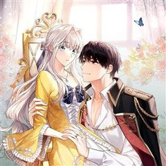
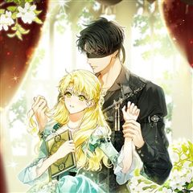
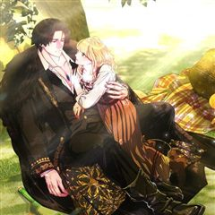
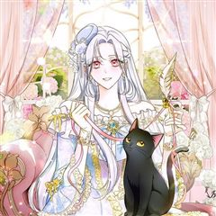
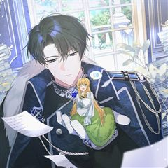
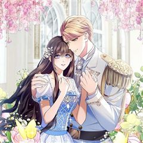
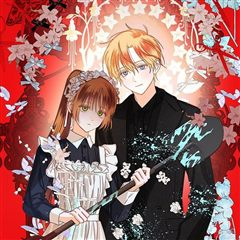

남주를 주웠더니 남편이 생겨버렸다 같은 웹툰 추천

남주를 주웠더니 남편이 생겨버렸다 · 마리씨 / 서촌 / 초암
남주를 주웠더니 남편이 생겨버렸다 재밌게 봤다면 이 웹툰들도 좋아할 거예요. 같은 장르이면서 로맨틱코미디, 힐링, 로판 같은 요소가 겹치는 작품을, 겹치는 요소가 많은 순서로 20개 골랐어요.
2026-10-08 기준 · 네이버웹툰·카카오웹툰·레진코믹스 · 성인 작품 제외
내 취향으로 직접 골라 추천받기 →-
1
 카카오웹툰
카카오웹툰악녀 황후의 전속 시녀
나 파레사 멘젤, 돈에 눈이 멀어 악명 자자한 황후의 전속 시녀가 되었다. 얼마나 대단한 악녀인가 싶었는데, 악녀는 무슨? 그저 까칠한 고양이잖아?! 악녀라 불리는 이면에 존재하는 상처 가득한 모습에, 그녀를 돕고 싶다고 생각했다. “네가 시녀로 위…
로맨틱코미디힐링로판로맨스카카오웹툰에서 보기 → -
2
 카카오웹툰
카카오웹툰너의 아이가 아니야
‘……진짜 아기라고? 여기에, 이 안에 아기가 자라고 있단 말이야?’ 전쟁을 종식시킨 위대한 전쟁 영웅 칼리아. 어느 날 그녀는 자신의 임신 사실을 알게 된다. 아이 아빠는 단 하루, 격정의 밤을 보냈던 제국의 대마법사이자 절친인 샤이먼 테를로앙 공…
로맨틱코미디힐링로판로맨스카카오웹툰에서 보기 → -
3
 네이버웹툰
네이버웹툰피폐물을 힐링물로 만드는 방법
[살아생전 즐겨보던 소설에 환생했다.] 너무 진부하다구요? 아닐 걸요! 왜냐면 그 소설이... 19금 피폐물이거든요...! ̗̀(ꀬ⏖ꀬ∴) 예쁘고 상냥한 여주인공의 동생으로 환생했지만, 언니의 새드엔딩을 지켜볼 수 없었던 레나티스는 언니 대신 잘생긴…
로맨틱코미디힐링로판로맨스네이버웹툰에서 보기 → -
4

카카오웹툰소꿉친구가 집착 남편이 되었다
“첫 만남 땐 가면을 쓰고 짠 나타나 날 구해줬으면 좋겠어. 잘 때 최소한의 것만 간소하게 가리고 자고... 몸도 좋아야 해.” “아, 비누 냄새가 났으면 좋겠어. 씻고 나올 땐 허리에 수건 한 장만 두르고. 첫날밤엔 잠도 안 자고 침대 부숴야 해.…
로맨틱코미디힐링로판로맨스카카오웹툰에서 보기 → -
5

카카오웹툰눈먼 공작과 약혼했다
소설 속 조연으로 환생했지만 다른 인물들과는 엮이지 않겠어! 하지만 폭삭 망해버린 가문 때문에 길가에 나앉게 되는데… ‘돈이 필요해.’ 어쩔 수 없이 소설 속 남자 주인공인 눈먼 공작, 제럴드의 공작 성에서 6개월 임시직으로 일하게 된 마린! “공작…
로맨틱코미디힐링로판로맨스카카오웹툰에서 보기 → -
6

카카오웹툰왕자님은 양파 따위에 울지 않는다
염병할 전쟁이 끝났다. 그로부터 3년. 이 시골 마을도 제법 안정된 것 같…… 은데. 웬 곰 같은 부랑자가 우리 식당에 쳐들어와 헛소리를 한다. “전쟁 중, 귀하의 아버님에게 진 빚을 갚으러 왔습니다.” 그런데 이 자식은 자기가 뭘 빚졌는지도 모른댄…
로맨틱코미디힐링로판로맨스카카오웹툰에서 보기 → -
7

카카오웹툰공작 부인의 남편을 찾습니다
“짜증나니까 그만 좀 질질 짜.” 데릴사위였던 남편의 돌변과 배신. 제 편 하나 없는 공작저에서 서서히 마모돼 가던 아르티아는 호수에 몸을 던지고 다시 눈을 뜬 순간, 다른 사람처럼 변모한다. 결국 사교계를 뒤흔들어 기적 같은 이혼에 성공한 아르티아…
로맨틱코미디힐링로판로맨스카카오웹툰에서 보기 → -
8

카카오웹툰탈덕해 버린 최애의 비서관입니다
즐겨 읽던 소설에 빙의한 미아 리시차. 무려 여동생은 장차 황후가 될 사람이었다. 가만히 앉아서 황후가 된 여동생의 콩고물을 빨면 되는 인생이었는데..., 그러기 위해선 소설의 흑막 '아사드 울리엘'의 비서가 될 필요가 있었다. 여차저차 취업에 성공…
로맨틱코미디힐링로판로맨스카카오웹툰에서 보기 → -
9

카카오웹툰기간한정 대리결혼이지만 씩씩합니다
나라 최고의 젊은 귀공자인 일레르. 그가 어떤 이유로 1년 한정 계약결혼을 제안한 상대는, 가난한 후작가 장녀 클레어였다. 갑작스러운 제안에 놀라면서도 계약결혼을 받아들인 클레어는 공작부인이 되지만, 사용인들에게 신혼 초부터 괴롭힘을 당한다. 그러나…
로맨틱코미디힐링로판로맨스카카오웹툰에서 보기 → -
10
 네이버웹툰
네이버웹툰육아부터 하는 연애
이제 막 대학교를 졸업한 어린 나이에 덜컥 언니의 아이인 '지호'를 키우게 된 ‘나은’. 그렇게 5년 후, 유치원 교사로 일하던 나은 앞에 함묵증을 앓는 유치원 원생 ‘민호’의 삼촌 ‘강우’가 나타난다. 강우는 민호가 나은 앞에서만 말한다는 사실에…
로맨틱코미디힐링로맨스네이버웹툰에서 보기 → -
11
 네이버웹툰
네이버웹툰같이 장볼래?
유통기한 임박 상품만 노리는 생활력 만렙 자취러 ‘양은’과, 모든 삶을 효율로 계산하는 미니멀리스트 ‘우석’. 1+1 딸기를 나눠산 그 날부터, 두 사람의 썸… 아니, 장보기가 시작된다!
로맨틱코미디힐링로맨스네이버웹툰에서 보기 → -
12
 네이버웹툰
네이버웹툰색시한 내 우렁이
퇴근 후 집에 왔더니 따뜻한 저녁이 차려져 있다. 잠깐... 나 혼자 사는데? 누군가 몰래 우리 집에 들어와 밥해주고 청소해 주고 빨래해주는 이 상황.... 너무 편해서 익숙해져 버렸어!!
로맨틱코미디힐링로맨스네이버웹툰에서 보기 → -
13네이버웹툰
동그란 그녀와 소심한 그 남자
긍정적인 힘으로 살아가자! 당신을 힘나게 해줄 오버 사이즈 여자의 파워풀한 러브 스토리! 먹는 것을 너무 좋아해서 어릴 때부터 쭉 플러스 사이즈였던 간호사 마리코. 사랑과는 무관한 삶인 줄 알았는데 어느 날 선배의 권유로 참석하게 된 소개팅에서 한…
로맨틱코미디힐링로맨스네이버웹툰에서 보기 → -
14
 네이버웹툰
네이버웹툰대디, 대디
홧김에 보낸 밤으로 아이 '여울'을 안게 된 소유. 아버지의 죽음 이후 자취를 감췄던 그녀는 5년 뒤 소꿉친구이자 유명 영화감독인 진욱과 운명처럼 재회한다. 여울을 보자마자 제 아들임을 직감한 진욱. 단칼에 선을 긋는 소유의 마음을 열고 진짜 아빠로…
로맨틱코미디힐링로맨스네이버웹툰에서 보기 → -
15카카오웹툰
캐스팅 신데렐라
대한민국 최고의 톱스타. 배우 서사라. "십 년 동안 배우로 먹고살면서 뭐가 제일 늘었을 것 같아요?" "글쎄요. 연기?" "인내심이랑 정신병이에요." 연예계에서 10년을 버티며 웬만한 사건은 다 겪었다고 생각했건만. "윤승태입니다" 유능하고 잘생긴…
로맨틱코미디힐링로맨스카카오웹툰에서 보기 → -
16
 카카오웹툰
카카오웹툰남편은 됐고, 돈이나 벌렵니다
여친 있는 남자의 아내가 되어 버렸다. 음, 건드리지 말아야겠지? “그럼 넌 바닥에서 자.” “뭐?” 싫은 눈치다. 그래, 바닥은 딱딱하지. 그렇다면 어쩔 수 없다. “손만 잡고 잘게. 누나 믿지?” 그런데 어쩌다 남편과 첫날밤에 침대를 부숴 버린…
로맨틱코미디로판로맨스카카오웹툰에서 보기 → · 남편은 됐고, 돈이나 벌렵니다 같은 웹툰 → -
17
 카카오웹툰
카카오웹툰여보, 나 파업할게요
2회차 결혼 생활, 돌연 파업 선언?! 결혼 생활 10년 동안 무뚝뚝하고 전쟁밖에 모르던 남편 제스터 옆에서 고생만 하다 불치병으로 죽은 카시아. 하지만 눈을 떠보니 10년 전 결혼 후 첫 날로 돌아와 있었다. 어차피 불치병으로 죽을 몸, 카시아는…
로맨틱코미디로판로맨스카카오웹툰에서 보기 → · 여보, 나 파업할게요 같은 웹툰 → -
18
 카카오웹툰
카카오웹툰돈으로 약혼자를 키웠습니다
넘치는 재력, 빼어난 외모. 일리아 블로든의 인생은 완벽했다. 약혼자의 바람을 목격하기 전까지는. "취향, 취미, 내 모든 걸 바꾸고, 바라는 모든 걸 들어줬는데... 더 이상은 호구처럼 살지 않을 거야. 파혼해 주겠어!" 완벽한 파혼을 위한 새로운…
로맨틱코미디로판로맨스카카오웹툰에서 보기 → · 돈으로 약혼자를 키웠습니다 같은 웹툰 → -
19

카카오웹툰공포게임 메이드로 살아남기
"나 실망시키지마, 힐다." 「아드리안의 살의가 오릅니다.」 「아드리안을 설득하여 살의를 낮추세요. 그렇지 않으면 당신은 죽습니다.」 「아드리안의 살의 92%」 아드리안 카이사르 폰 데어 팔츠그라프. 팔츠그라프 가문의 후계자. 세상에서 천사로 칭송받…
로맨틱코미디로판로맨스카카오웹툰에서 보기 → · 공포게임 메이드로 살아남기 같은 웹툰 → -
20
 카카오웹툰
카카오웹툰후궁계약
사신이란 별명으로 불리는 자객 예서는 어느 날 수상한 남자에게 거액의 비밀 의뢰를 받는다. "성국 황제의 후궁으로 입궁해 다오. 그게 내 의뢰이다." 뭐야 이거? 자객을 후궁으로 고용해서 뭘 하려고? "왜. 존귀하신 황제께서 미녀 자객한테 한번 먹혀…
로맨틱코미디로판로맨스카카오웹툰에서 보기 →